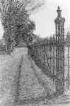

<!DOCTYPE HTML PUBLIC "-//W3C//DTD HTML 4.01 Transitional//EN"        "http://www.w3.org/TR/html4/loose.dtd">
<html lang="en">

<head>
<title>Jo McDougall:&nbsp; Going Back - Henderson State University</title>
<meta http-equiv="Content-Language" content="en-us">
<meta http-equiv="Content-Type" content="text/html; charset=windows-1252">
<meta name="GENERATOR" content="Microsoft FrontPage 5.0">
<meta name="ProgId" content="FrontPage.Editor.Document">
<meta name="copyright" content="Copyright © 2002 Henderson State University">
<meta name="rating" content="General">
</head>

<body background="ARlogoborder.jpg" link="#006600" vlink="#006600" alink="#006600" bgcolor="#FFFFFF">

<div align="right">
  <table border="0" width="85%">
    <tr>
      <td width="79%" align="left">
        <blockquote>
          <p class="MsoNormal" style="tab-stops:right 86.45pt"><b><span style="font-size:
18.0pt;mso-bidi-font-size:10.0pt;font-family:Arial"><font color="#006600">Jo
          McDougall</font><o:p>
          </o:p>
          </span></b></p>
        </blockquote>
        <p class="MsoNormal" style="tab-stops:right 94.7pt"><b><span style="font-size:
14.0pt;mso-bidi-font-size:10.0pt">Going Back<o:p>
        </o:p>
        </span></b></p>
        <p class="MsoNormal"><span style="font-size:12.0pt;mso-bidi-font-size:10.0pt">My
        father's fields lie empty.&nbsp;<br>
        My mother's crape myrtles&nbsp;<br>
        have died in their sleep.&nbsp;<br>
        Daring the abandoned steps,&nbsp;<br>
        I enter the farmhouse&nbsp;<br>
        and my old room.<o:p>
        </o:p>
        </span></p>
        <p class="MsoNormal"><span style="font-size:12.0pt;mso-bidi-font-size:10.0pt">I
        used to open these windows&nbsp;<br>
        to the sound of a mockingbird,&nbsp;<br>
        the moon creaking up&nbsp;<br>
        like a stage set.<o:p>
        </o:p>
        </span></p>
        <p class="MsoNormal"><span style="font-size:12.0pt;mso-bidi-font-size:10.0pt">In
        the silence&nbsp;<br>
        a wasp bumps its way&nbsp;<br>
        along the ceiling.<o:p>
        </o:p>
        </span></p>
        <p class="MsoNormal"><span style="font-size:12.0pt;mso-bidi-font-size:10.0pt"><o:p>
        </o:p>
        </span>
      </td>
      <td width="21%" valign="top" align="center"><a href="images/fisherG6.jpg">
      </a><a href="images/brownH2.jpg"><br>
        </a><font size="2">Gabe Fisher</font></td>
    </tr>
  </table>
</div>
<p align="center"><a title="Select to go to the Home Page" href="2000.html">HOME</a></p>

</body>

</html>